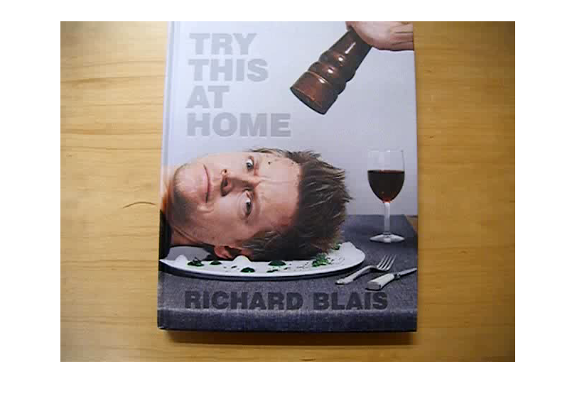
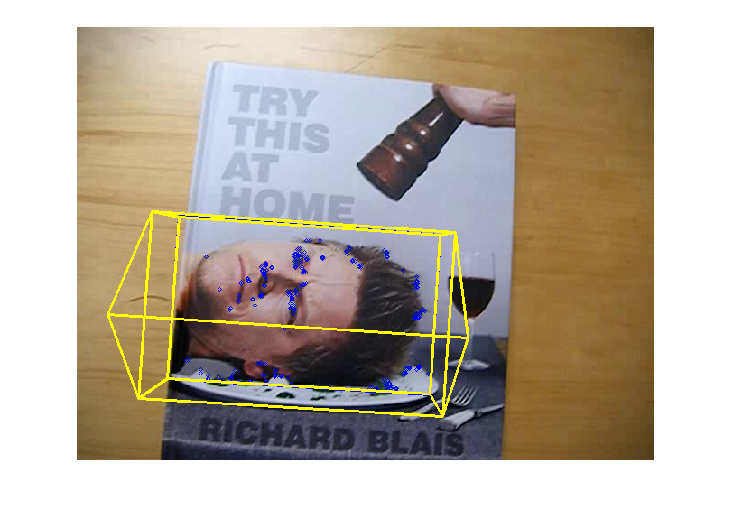

Contents
Planar augmented reality
This sample shows an example of augmented reality overlay over a tracked planar object. The function cv.solvePnP is used to estimate the tracked object location in 3D space.
Select a textured planar object to track by drawing a box with the mouse. It uses the RectSelector and PlaneTracker classes.
Sample video: http://www.youtube.com/watch?v=pzVbhxx6aog.
Sources:
function plane_ar_demo(vid) % video file, and a default target to track [x,y,w,h] win = []; if nargin < 1 vid = fullfile(mexopencv.root(), 'test', 'blais.mp4'); assert(exist(vid, 'file') == 2, 'Missing video file'); if true win = [135 165 285 175]; % face else win = [136 0 366 433]; % book end elseif isempty(vid) vid = 0; end % open video feed, and get first frame cap = cv.VideoCapture(vid); pause(1); assert(cap.isOpened(), 'Failed to open video'); frame = cap.read(); assert(~isempty(frame), 'Failed to read frames'); % prepare plot paused = false; hImg = imshow(frame); % create and initialize tracker tracker = PlaneTracker(); if ~isempty(win) tracker.addTarget(frame, win); end % create ROI region selector if ~mexopencv.isOctave() onHelp(); roi = RectSelector(hImg); roi.callback = @onRect; else %HACK: RectSelector not Octave compatible %HACK: function handle to nested function not supported in Octave roi = struct('isDragging',@()false); end % listen to keyboard input if ~mexopencv.isOctave() %HACK: function handle to nested function not supported in Octave set(ancestor(hImg,'figure'), 'WindowKeyPressFcn',@onType); end % main loop while ishghandle(hImg) playing = ~paused && ~roi.isDragging(); if playing % read new frame frame = cap.read(); if isempty(frame), break; end end out = frame; % track and draw keypoints, boundary, and pose of targets if playing tracked = tracker.track(frame); for i=1:numel(tracked) tr = tracked(i); out = cv.circle(out, tr.pt1, 2, 'Color',[0 0 255]); out = cv.polylines(out, tr.quad, 'Closed',true, ... 'Color',[0 0 255], 'Thickness',2); out = drawOverlay(out, tr); end end % display result set(hImg, 'CData',out); if playing drawnow; else pause(0.1); % slow down a bit if paused end end cap.release(); if isobject(roi), delete(roi); end % --- Callback functions --- function onRect(rect) %ONRECT Callback for ROI selector % % onRect(rect) % % ## Input % * __rect__ selected rectangle [x,y,w,h], or empty % if isempty(rect), return; end % track new target disp('Adding target...') tracker.addTarget(frame, rect); % un-pause paused = false; end function onType(hfig, e) %ONTYPE Event handler for key press on figure switch e.Key case {'q', 'escape'} close(hfig); case 'h' onHelp(); case {'space', 'p'} disp('Toggle pause...'); paused = ~paused; case {'c', 'r'} disp('Clearing tracker...'); tracker.clear(); end end function onHelp() %ONHELP Display usage help dialog h = helpdlg({ 'Select object(s) to track using the mouse.' 'Hot keys:' ' q - quit' ' h - help' ' p - pause' ' c - clear targets' }); % wait for user to accept dialog set(h, 'WindowStyle','modal'); waitfor(h); end end
Helper function
function img = drawOverlay(img, tr) %DRAWOVERLAY Draw a 3D house on top of tracked object to show its pose % % img = drawOverlay(img, tr) % % ## Input % * __img__ image on which to draw % * __tr__ tracked target structure % % ## Output % * __img__ output image % if true % simple model of a house (cube with a triangular prism roof) ar_vertices = [ 0 0 0; 0 1 0; 1 1 0; 1 0 0; ... 0 0 1; 0 1 1; 1 1 1; 1 0 1; ... 0 0.5 2; 1 0.5 2 ]; ar_edges = [ 0 1; 1 2; 2 3; 3 0; ... 4 5; 5 6; 6 7; 7 4; ... 0 4; 1 5; 2 6; 3 7; ... 4 8; 5 8; 6 9; 7 9; 8 9 ]; else % simple XYZ axes ar_vertices = [0 0 0; 1 0 0; 0 1 0; 0 0 1]; ar_edges = [0 1; 0 2; 0 3]; end % camera matrix (assumes planar tracked object wrt camera plane) [h,w,~] = size(img); fx = 1.0; % adjust camera focal length for proper augmentation [0.5, 1.0] K = [fx*w, 0, 0.5*(w-1); ... 0, fx*w, 0.5*(h-1); ... 0, 0, 1]; % find object pose from corresponding 3D/2D points rect = tr.target.rect; quad_3d = rect([1 2; 3 2; 3 4; 1 4]); quad_3d(:,3) = 0; % Z=0 for 3D points in target image [rvec, tvec] = cv.solvePnP(quad_3d, tr.quad, K); % scale and translate house vertices, to place it on top of target object % in target image coordinates, with origin being top-left corner in % rectangle plane: % 1 unit in x-dir = object width % 1 unit in y-dir = object height % 1 unit in z-dir = 0.3 * object width (in opposite cam z-direction) xyzScale = rect(3:4) - rect(1:2); xyzScale(3) = -0.3 * max(xyzScale); verts = bsxfun(@times, ar_vertices, xyzScale); verts = bsxfun(@plus, verts, [rect(1:2) 0]); % project house 3d points to 2d points in new frame coordinates verts = cv.projectPoints(verts, rvec, tvec, K); % connect and draw house edges in new frame pts1 = verts(ar_edges(:,1)+1,:); pts2 = verts(ar_edges(:,2)+1,:); img = cv.line(img, pts1, pts2, 'Color',[255 255 0], 'Thickness',2); end